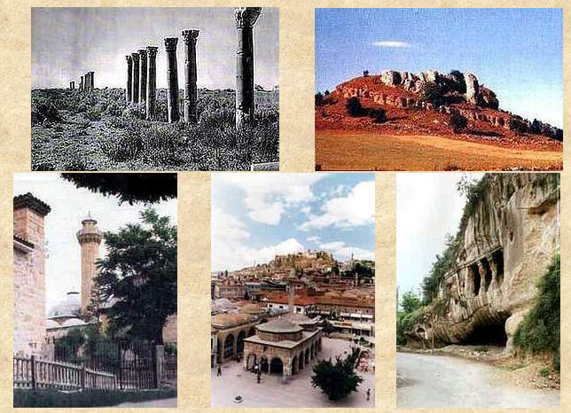

Kastamonu Arkeolojik ve Tarihi değerler yönünden bir nevi açık hava müzesi görünümündedir. İl Merkezinde ve diğer yerleşim birimlerinde bulunan kale, kaya mezarları, cami ve külliyeleri, medreseler, hanlar, hamamlar ve köprüler ile Kastamonu bütün olarak bir sit alanı niteliğindedir. Taşköprü Pompeipolis Antik Kentinin yanı sıra Çatalzeytin Ginolu, İnebolu ve Devrekani'de arkeolojik sit alanları vardır. Çevrede kazı ve araştırmalardan elde edilen eski Anadolu uygarlıklarına ait arkeolojik ve tarihi eserler Kastamonu Arkeoloji Müzesi'nde sergilenmektedir.
Kastamonu çevresinde Candaroğulları ve Osmanlılardan bir çok tarihi eser kalmış olup, Ata Bey Camii, İsmail Bey Külliyesi, Yılanlı Şifa hanesi, Frenkşah Hamamı, Aşır Efendi Hanı, Karanlık Bedesten, Nasrullah Külliyesi, Yakup Ağa Külliyesi bunlardan bazılarıdır.
